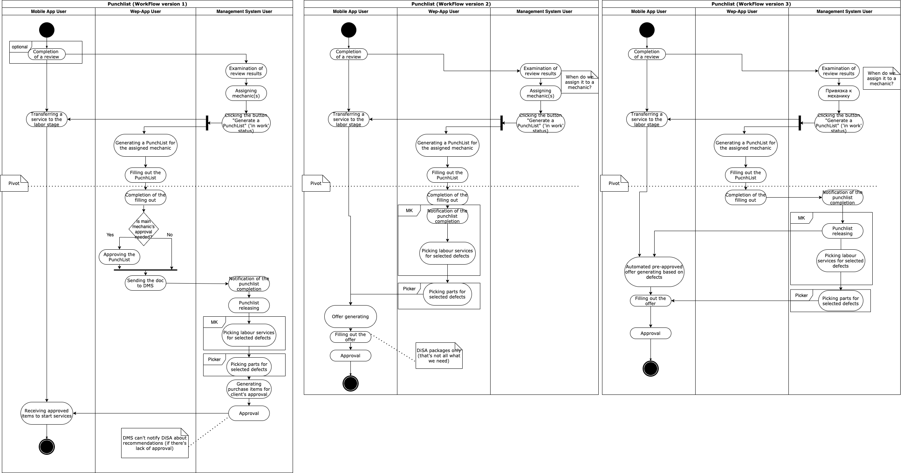
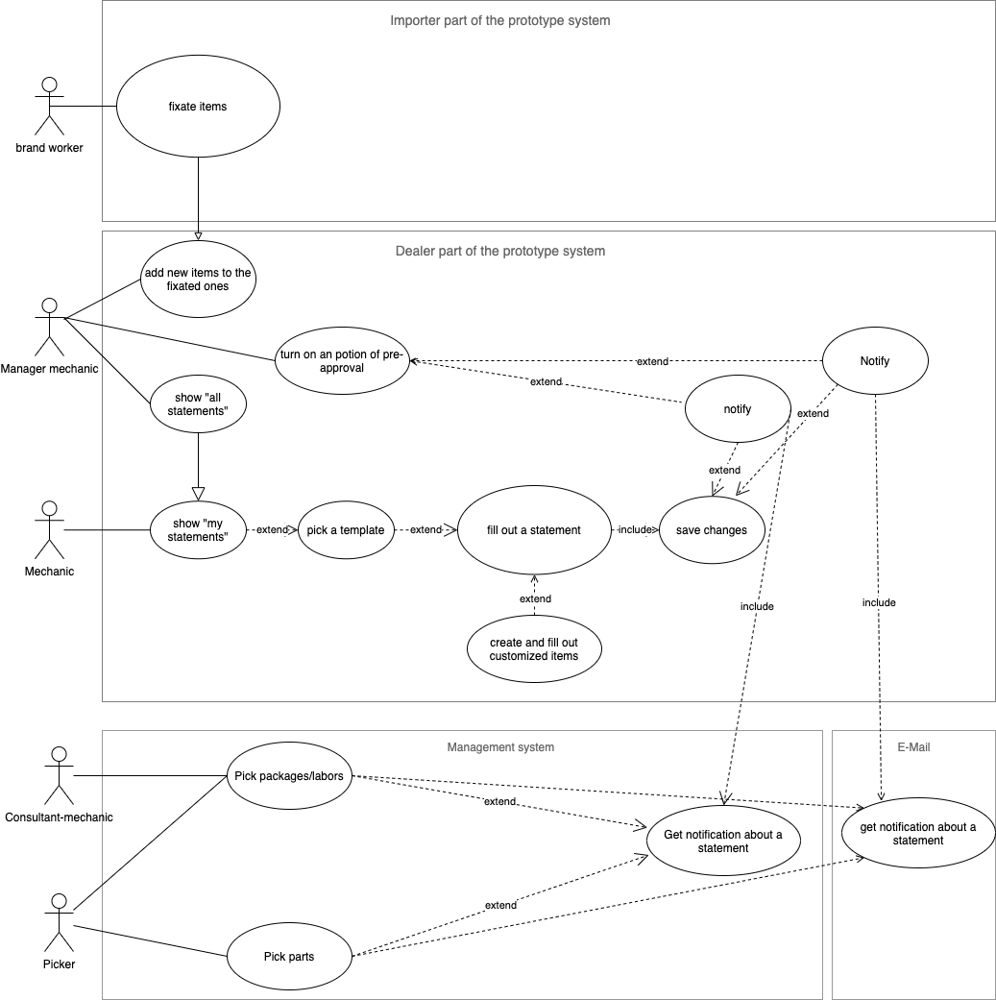
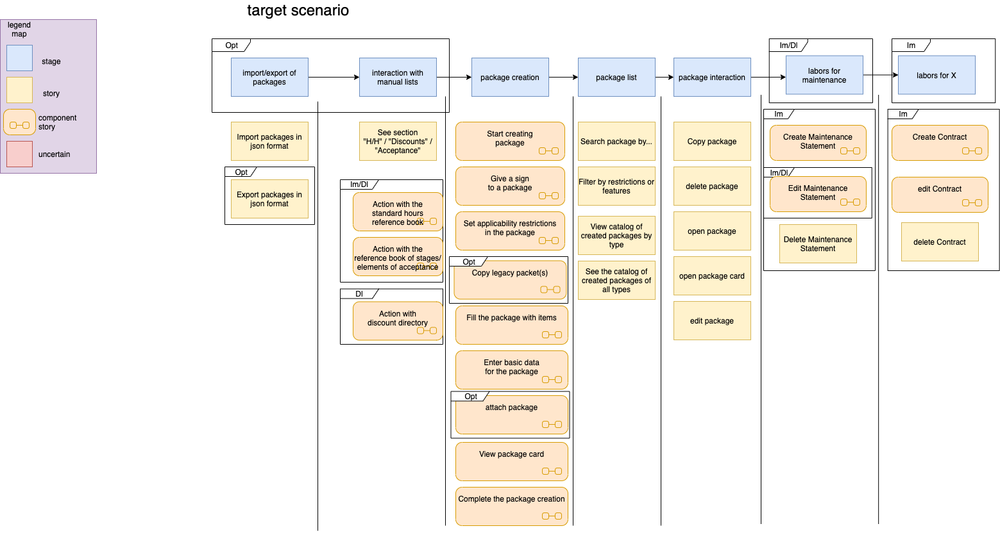
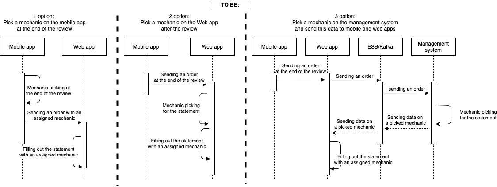
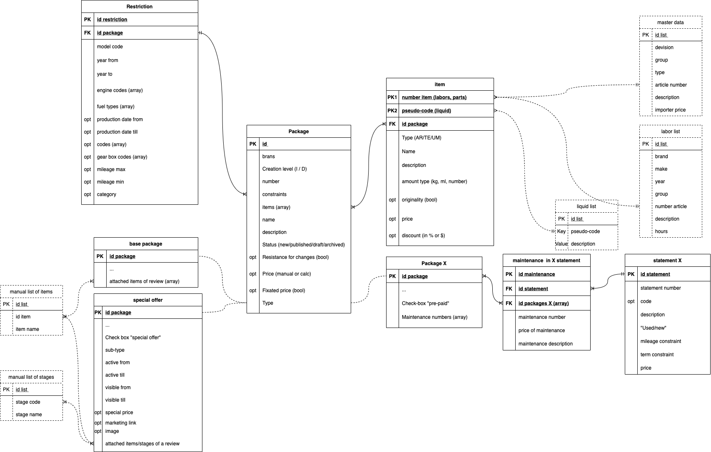
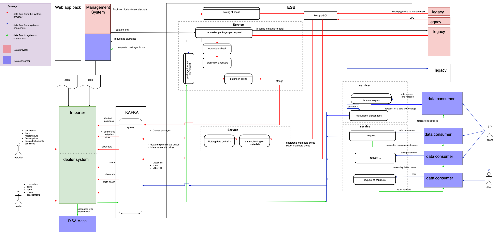
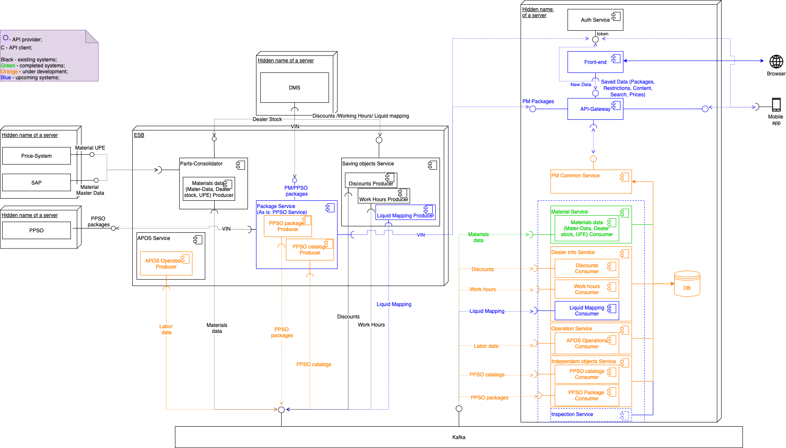

Business System Analysis
Here, we can explore various types of Business System Analysis diagrams I've used to map business processes and design enterprise systems.
Swimlane workflow
A Swimlane workflow diagram is a common tool both in UML and BMP notations. It clarifies responsibilities by visually dividing and organizing processes across different roles, departments, and systems.
Use case
A use case diagram visually represents system functionality and user interactions, helping to clarify system requirements and design.
User story map
A user story map organizes and prioritizes user stories, providing a visual overview of a product's features and user journey to guide development and release planning.
Sequence diagram
A Sequence diagram models the flow of messages between objects over time, illustrating how processes interact in a specific scenario.
Entity-Relationship Diagram
An ERD (Entity-Relationship Diagram) visually represents the structure of a database, showing entities, relationships, and key attributes to design and organize data effectively.
Data Flow Diagram
A DFD (Data Flow Diagram) visually depicts the flow of data within a system, highlighting processes, data stores, and data movement to understand and optimize system functionality.
Component diagram
A component diagram illustrates the structure of a system by showing its components, their relationships, and how they interact to fulfill system functionality.